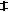
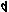

移動サの用語集：タ行
ア行 ｜ カ行 ｜ サ行 ｜ タ行 ｜ ナ行 ｜ ハ行 ｜ マ行 ｜ ヤ行 ｜ ラ行 ｜ ワ行 ｜ 数字・記号
タート（たーと：ṭhāṭh）
様々なラーガを、その持つ雰囲気によって分類し、特徴として持つ使用音（音度・音程変位）セットを指標とし、代表的なラーガ名を名称としてまとめたもの。V.N.バートカンデーによる10分類がよく知られている。原義は「骨格・枠組」。「タータ（ṭhāṭha）」とも。
当サイト内では「移動サでのインド旋法」のページ参照。
ターラ（たーら：tāla）
インド古典音楽における、拍節法（リズム周期の規則体系）。もとの意味は「手のひら」または「ヤシの葉」のことで、そこから「手拍子」などの意味が派生している。ラーガと並んで、インド古典音楽で最重要の技術的形式。
個々のターラを「10拍子」「14拍子」「16拍子」などと説明されることがあるが、実際の聞こえとしては、ヨーロッパの音楽伝統における１小節として聞こえるわけではなく、多くのものは内部に分節（アンガ／カンド）を持ち、１周期（１アーヴァルタ）あたり２小節から６小節程度に相当すると感じられる。旋律の１フレーズの最後の音は、リズム周期の最初の拍（サムと呼ばれる）に乗ることで解決（解放）され、またリズムの勢いに乗って次のフレーズが始まって、音楽が円環として回ってゆく。その乗りを掴むことが、インド古典音楽を楽しむ上で最も重要と思われる。
拍（マートラー）には、ヨーロッパと同じく、軽重強弱の違いがあって、それによって種々のパターンを構成する。合計拍数が同じターラでも、内部での分節（アンガ／カンド）の拍数の区切りが異なる場合があるし、さらにそれが同じでも、各拍の感じられ方が異なる場合もある。そうした差異によって、ターラは区別されて名づけられている。伝統上では「108種のターラ」という表現が定型的に使われるが、総数はそれだけとは限らない。その反面、各ジャンルにおいて非常によく使われるターラと、滅多に使われないターラの差も大きい。
「空っぽ・空虚」を意味する、カーリー（空拍）という拍があることも、ターラの特徴である。手拍子で言うならば、手を叩かずに泳がせる無音の拍である。インド古典音楽では周期の１拍目（サム）の直前が浮いた拍とは限らず、最も重心の浮いたカーリー（空拍）は、１拍目から時間的に離れた、周期の中間付近に置かれることが普通である。
ダイヴァタ（だいゔぁた：dhaivata）
インドの伝統によるⅵ度音の音度名。「ダ(Dh or D)＝スヴァラ」。スヴァラの一つ。
「（宗教的）智恵」「讃歌」を意味する「dhī」から派生した「dhīvat（智恵のある）」に基づき、「智者に属するもの」の意味。漢訳で「明意」とも。なぜこの音度を表すのかは不明である。
代音唱法（だいおんしょうほう）
その楽曲本来の歌詞や演奏法の代わりに、仮に他の短い音節群に託して歌うシステム。通常は、単に「唱法」と呼ぶ。階名唱・音名唱・音度名唱・擬楽唱・亮音唱などの総称。ソルミゼーションより広い概念。こちらの説明ページを参照。
対蹠音（たいせきおん）
基準となる音から、１オクターブ周期の反対側（付近）の音程にある音。増四度または減五度音程にある音。インターバル＝クラス（ic：音程級）が「6」に当たる音。
大全音（だいぜんおん）
代表メーラ（だいひょうめーら）
各ヴァラヤないし周期性の音階において、均基準音を主音とするメーラないし単純な旋法のこと。ヴァラヤないし音階の形を示すときに、代表形として挙げられる。
例えば、アーディゴータマー（≒ディアトニック音階）というヴァラヤにおける、ディーラシャンカラーバラナム（≒長音階（長旋法））というメーラ。
ダヤーヴァティー（だやーゔぁてぃー：dayāvatī）
インド音楽におけるシュルティ名で、音階基準音から上方に5番目の音程。原義は「憐れみ深い」の女性形。
音程幅は、約70.7￠。ジャーティは、カルナー。
短音階（たんおんかい：minor scale）
「音階」と名はついているが、ディアトニック音階（全音階）に属する旋法の一つである。階名「ラ・シ・ド・レ・ミ・ファ・ソ・ラ」の形。短旋法。
上記階名のままの「自然短音階」の他に、「和声的長音階」と「旋律的長音階」を含む。ヴァラヤとしては、和声的短音階はニティヤサーラダー＝ヴァラヤ、旋律的短音階の上昇形はラナラクシュミー＝ヴァラヤに属する旋法となり、別系統である。
チャンドーヴァティー（ちゃんどーゔぁてぃー：chandovatī）
インド音楽におけるシュルティ名で、音階基準音から上方に4番目の音程。原義は「韻律（いんりつ）を持つ」の女性形。
音程幅は学説により、約21.5￠または約36.4￠。ジャーティは、マディヤー。
中心音（ちゅうしんおん）
旋律の中で何かしらの意味合いで中心になる音。その意味合いというのは、旋律の落ち着く音（主音）、強調・多用される音（軸音・支配音）、旋律や響きの枠組を作る音（核音・パルヴァン）などがある。楽曲や旋律により、それらの役割を一つの音が兼ねていたり別々だったりする。
調（ちょう：key）
旋法の音高を特定したもの。旋法の中での主音の音高を基準として、その音名を取って「○○調△△旋法」と呼ぶ。長音階と短音階だけは、それを縮約して、「○○長調」「○○短調」と呼ぶ言い方がある。
五線譜における「調号」は、調ではなく、ディアトニック音階（全音階）における均を指定するものである。そう結論する理由は、主音がどこかを指定していないので、同じシャープ１つの調号でも、ト長調とホ短調が書き表わせる（＝調が確定しない）からである。
長音階（ちょうおんかい：major scale）
「音階」と名はついているが、ディアトニック音階（全音階）に属する旋法の一つである。階名「ド・レ・ミ・ファ・ソ・ラ・シ・ド」の形。長旋法。
広義には、短音階との類比でそう呼ばれるところの、「和声的長音階」と「旋律的長音階」を含む。ヴァラヤとしては、和声的長音階はヌータナジーヴァニー＝ヴァラヤ、旋律的長音階はラナラクシュミー＝ヴァラヤに属する旋法となり、別系統である。
調号（ちょうごう：key signature）
五線譜において、書かれる音楽が基づく音階の各幹音の音位がどこであるかを示すために、主に各段の冒頭付近、音部記号の次に書かれる変化記号群（即ち♯や♭）。ハ均のディアトニック音階との音位差を示す。なお、無調性の音楽の場合などは、ハ均のディアトニック音階でなくとも、何も書かれない場合がある。
この記号は、主音がどこかを示さないため、音部記号との組み合わせで音階の類と均は分かっても、旋法の種類と調までは決定できない。従って、本来「調号」ではなく「均号」と呼ばれるべきものである。
各調号を構成する変化記号は、一般の楽典では♯と♭のどちらかのみを、それぞれ７つまでであり、それに対して転調時に前の調号を打ち消すために使われる♮が加わる。しかし、拡張移動サでは、ディアトニック音階以外の音階を平等に表現するため、♯と♭が混在する調号があるのみならず、シャープは４重（＝クアドラプルシャープ）、フラットは５重（＝クインタプルフラット）までが用いられ、さらに四分音単位の変化記号も加わる。
実際に、トルコ音楽・ペルシア音楽などの中近東の音楽では、♯・♭・♮以外の変化記号を含む調号を付けた楽譜表記が行われている。
調性（ちょうせい：tonality）
旋律や和音について、中心音（＝主音・軸音または核音）と関連付けながら構成されているという性質。音の体系付けを排除した「無調性（atonality）」と対比して言う。狭義には、三和音による機能和声が機能していることだが、広義には、旋法的な音楽全てに調性を認める。
調整律（ちょうせいりつ）
何らかの純正律に対し、なるべく少ない音高（乃至は鍵盤）でなるべく多くの調（均）を、ひどく耳障りにならずに演奏できるように、人間の耳で気にならない程度に音程をずらして調整した音律。
単に調整律といえば、平均律ではない、不均等調整律のことを意味する。
不均等調整律は、なるべく少ない音高で多くの調（均）を演奏できる一方で、もとの純正律にあった各調での色合い・性格の違いをもなるべく保持しようとした音律で、多くの種類がある。
ディアトニック（でぃあとにっく：diatonic）
「全音階的な」。英語読みをもとにすれば、「ダイアトニック」。
もと、ギリシア音楽のテトラコード（ゲノス）の種類の名称で、＜半音（短二度）＋全音（長二度）＋全音（長二度）＞で完全四度を成す。ディアトニック音階（全音階）は、これを２つ重ねた構造をしている。
ディアトニック音階（でぃあとにっく＝おんかい：diatonic scale）
最もよく使われる１オクターヴ周期性の７音音階の一種。英語読みをもとにすれば、ダイアトニック音階。訳して「全音階（ぜんおんかい）」という。
二度の種類の配列は、短二度２つと長二度５つから成り、順に「長・長・短・長・長・長・短」の周期である。全音・半音で言えば、「全・全・半・全・全・全・半」。いわゆる「長音階」「自然短音階」及び、各種教会旋法が、旋法としてこれに属する。
ヴァラヤの概念からすれば、アーディゴータマー＝ヴァラヤが相当するが、それに入らない旋法をディアトニック音階（全音階）の概念には含むことがある。
ティーヴラ（てぃーゔら：tīvra）
ティーヴラー（てぃーゔらー：tīvrā）
インド音楽におけるシュルティ名で、音階基準音から上方に最初の音程。原義は「鋭い・烈しい」の女性形。
音程幅は学説により、約21.5￠または約92.2￠。ジャーティは、ディープター。
ティーヴラ・コーマル（てぃーゔらこーまる：tīvra-komal / tīvra-komala）
インド音楽で、「デミフラット」のこと。サンスクリットの発音では「ティーヴラ・コーマラ」と読む。
ティーヴラタラ（てぃーゔらたら：tīvratara）
インド音楽で、「シャープ＝アンド＝ア＝ハーフ」のこと。「～タラ」は、「より～」を意味する比較級の語尾。
デミシャープ（でみしゃーぷ：demisharp / half-sharp）
ナチュラル（♮）音より１四分音高い音、または２コンマ高い音を示す、変化記号の一種。シャープ（♯）の縦棒を一本減らした形で、のような形をしている。
デミフラット（でみふらっと：demiflat / half-flat）
ナチュラル（♮）音より１四分音低い音、または２コンマ低い音を示す、変化記号の一種。フラット（♭）を左右裏返した形で、のような形をしている。
転回（てんかい：inversion）
音の上下を（いずれかの音をオクターヴ移すことなどにより）置き換えること。
音程について、和音について、旋律の進行について、また対位法などにおける声部の置き換えについても用いられる。
また応用的に、同じ均の中で主音とする音を変えて、違う調（＝平行調）に移ることや、同じ音階の中で主音とする音を変えて、違う旋法を生み出すことにも用いる。１オクターヴ周期性の７音音階（12半音単位）には、それぞれ７通りの、相互に主音を替えた関係にある旋法が属する。インド音楽ではこの意味の転回を、ムールチャナー（転倒：mūrchanā）と呼ぶ。
転均（てんきん）
楽曲や演奏の途中で、楽曲の一部として、音階を高低に転じること。
転調（てんちょう：modulation）
楽曲や演奏の途中で、調が変わること。とりわけ、共通和音を介する場合に言う。
近親調と呼ばれる、共通項の多い調への転調が普通であるが、特に近代になって以降は、遠隔調への転調も行われる。
転調の方法は、媒介となる共通和音と前後の調との関係により、ディアトニック転調・クロマティック転調・エンハーモニック転調の３類型に分類される。
また、前後で何が変わるかにより、音階の型の変わる「転類」、音階の均を移す「転均」、音階の中で主音を交替する「転周」、音の役割や動き方を変更する「転格」と、それらの複合にも分析できる。また、それぞれの中で、前後を通じて主音の音高が維持されるかによって「留調／更調」の区別がなされるべきであり、また均が維持されるかにより「留均／更均」、旋法の型が維持されるかにより「留旋／更旋」等の区別ができる。例えば、同主調への転調は「更均留調」であるし、平行調への転調は「留均更調」である。通常は「転調」とは扱われない「転格」だけの場合も、ここでは「転調」に含める。
インド古典音楽では一般に、主音の音高を変えるタイプの転調は認められない。
ドヴァニ（どゔぁに：dhvani）
サンスクリットで「音声」の意味。
楽音である「スヴァラ」よりも意味が広く、噪音を含むあらゆる音を指す。また、宗教的・神秘的な意味を兼ねる「ナーダ」とも違って、現世的・物理的な意味に加えて、文学的・比喩的な「暗示」のニュアンスを持つ。
導音（どうおん：leading tone）
旋法の音の動きの中で、主音または他の休止音と半音（以下）の音程にあり、主音または休止音へと進んで解決しようとする強い力を持つ音。旋法の構成音の役割の一つ。
特に説明のない場合は、主音の半音下に当たる長ⅶ度音のことを指す。
同均同主調（どうきんどうしゅちょう）
同主調のうち、旋法の主要構成音が全て同じで、主音以外の構成音の役割や、旋律の作法のみ異なる調。同均同主異旋調。例えば、ハ長調に対するハ調イオニア旋法。
同主調（どうしゅちょう：parallel key）
もとの調と主音が同じ音高で、異なる旋法による調。例えば、ハ長調に対するハ短調。
ドーリア旋法（どーりあ・せんぽう：Dorian mode）
ヨーロッパ音楽の旋法名。ドリア旋法。ドリアン。
教会旋法名としては、「第Ⅰ旋法」または「正格プロトゥス（protus authentus）」と呼ぶ方がより正式で、ドレミでは「レミファソラシドレ」でレが主音・ラが軸音、拡張移動サでは「サリギマパディニサ」と表記できる。ちなみにこの音型は、古代インドのヴェーダ期の音階とも同一と言える。日本の民謡でも、ドレミのレを終止音とする曲がおそらく最も多い。
古代ギリシアで用いられた名称としては、ドレミでは「ミファソラシドレミ」、拡張移動サでは「サラギマパダニサ」、教会旋法でフリギア旋法と呼ばれるものに相当する。
なお、古典ギリシア語及び古典ラテン語では、語頭のDo-の'o'の母音は長母音であるが、教会旋法命名当時の中世ラテン語では、母音の長短による語の区別は失われていた。英語では長母音。
トニック・ソルファ法（とにっく・そるふぁ・ほう：Tonic Sol-fa）
19世紀のイギリスで、サラ・アンナ・グラヴァーによって創案され、ジョン・カーウェンによって完成された、音楽教育システム。
幹音を「ドレ(Ray)ミファソラ(Lah)ティ」とし、派生音用に母音を変化させた音節も備えた階名、即ち拡張されたドレミによる移動ドのソルフェージュを特徴の一つとする。
他に、階名を手の形で示すハンドサイン、階名をその属調・下属調とともに梯子型に書き示すモデュレーター、階名の頭文字または派生音の階名の音節を文字で並べる文字譜、音階の各構成音の心理的効果の感得、リズムを音節で歌う「リズム名唱」、などを構成要素とする教育法である。
日本ではあまり普及していないが、その一因は、日本人が「L」と「R」の区別が不得意で、「リ」（Re,／Le,）や「ロ」（Ra,／La,）の弁別が十分できず、システムそのままでは旨みが損なわれること、そしてそのための工夫として階名の変更がなされたりしたが、統一的な決定版が出なかったことが考えられる。
ドレミ（どれみ：Do-re-mi / Sol-fa）
11世紀にイタリアの修道士グィード・ダレッツオによって発明された「Ut,Re,Mi,Fa,Sol,La,」を起源とする「ドレミファソラシ」や「ドレミファソラティ」等の音節のセット。もともとは階名として発明されたが、イタリア・フランスなど一部の国々で音名としても定着し、さらに人によっては音度名として使うこともある。
派生音（半音階）のための追加を含めた拡張セットも複数ある。
音楽の近代化が西ヨーロッパで起こったために、それとともに普及して世界的に広く用いられているが、歴史的には、インド古典のサルガムなどより起源がはるかに新しい。
ドローン（どろーん：drone）
ある楽曲や旋法を演奏する間、背景として、長い時間変化せずに鳴らされる、１つまたは少数のピッチクラスから成る音のパターン。持続低音。
ドローンを含む音楽は、世界各地の民族の伝統に見られるが、現代音楽でも用いられる。
そのうちインド古典音楽では、ほとんど全ての音楽で、主音「サ」を含むドローンを、一曲を通じて演奏する。ドローン専門の楽器も用いられ、撥弦楽器のタンプーラー（タンブーラー）は最も代表的なものである。他には、リードオルガンの仲間であるスルペーティー（スワルペーティー）や、ダブルリードの管楽器であるオットゥなどが存在するほか、現代では、これを電動化・電子化した、タンプーラー＝マシン（電子タンプーラー、シュルティ＝ボックス）が普及している。インド音楽の演奏には、旋律奏者（撥弦楽器・擦弦楽器・打弦楽器・管楽器・声楽など）やリズム奏者（太鼓類・壺・鉦などの体鳴楽器）のほかに、何らかのドローン楽器が登場するのが普通である（※声楽の人が自ら奏でたり、電気で自動演奏する場合を含めて）。
このような音楽体系では、ベース音またはコードが一曲を通じて変わらないので、それに合った調・旋法にしか転調できない。
ア行 ｜ カ行 ｜ サ行 ｜ タ行 ｜ ナ行 ｜ ハ行 ｜ マ行 ｜ ヤ行 ｜ ラ行 ｜ ワ行 ｜ 数字・記号
（最終更新2013.10.3）